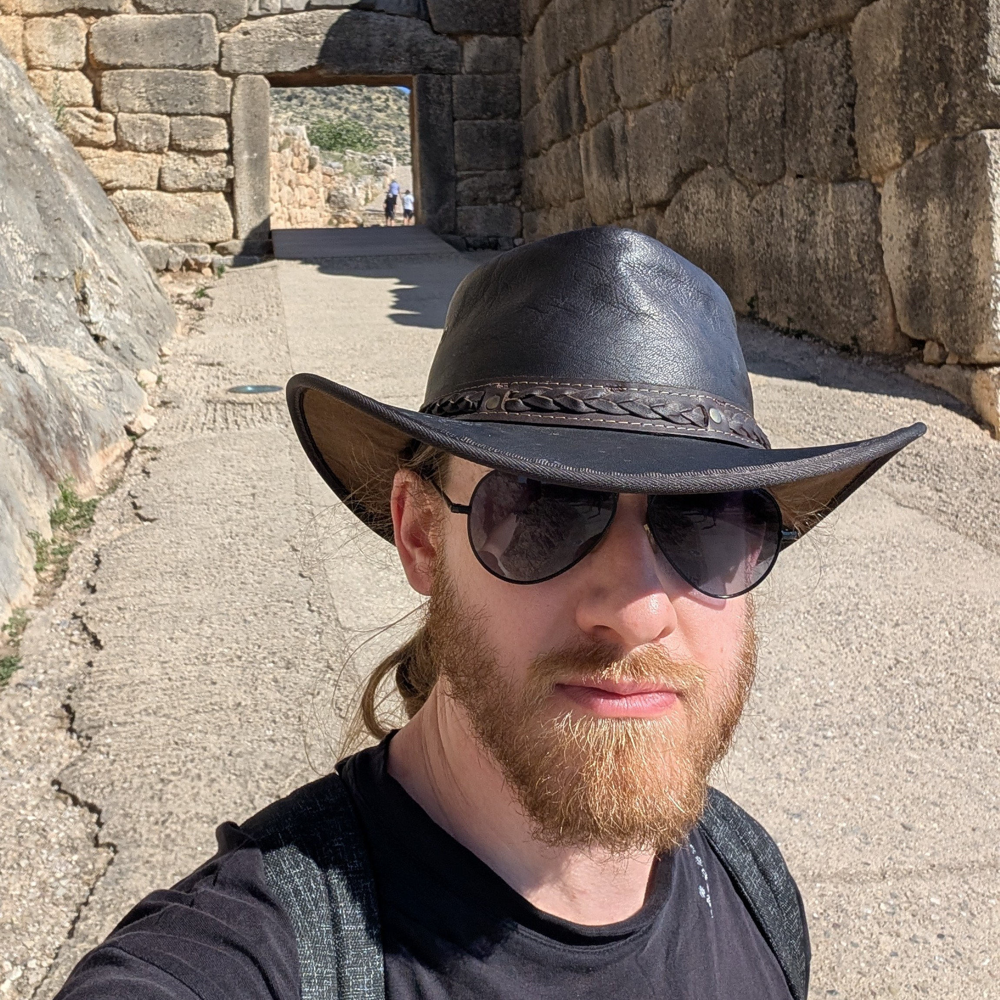
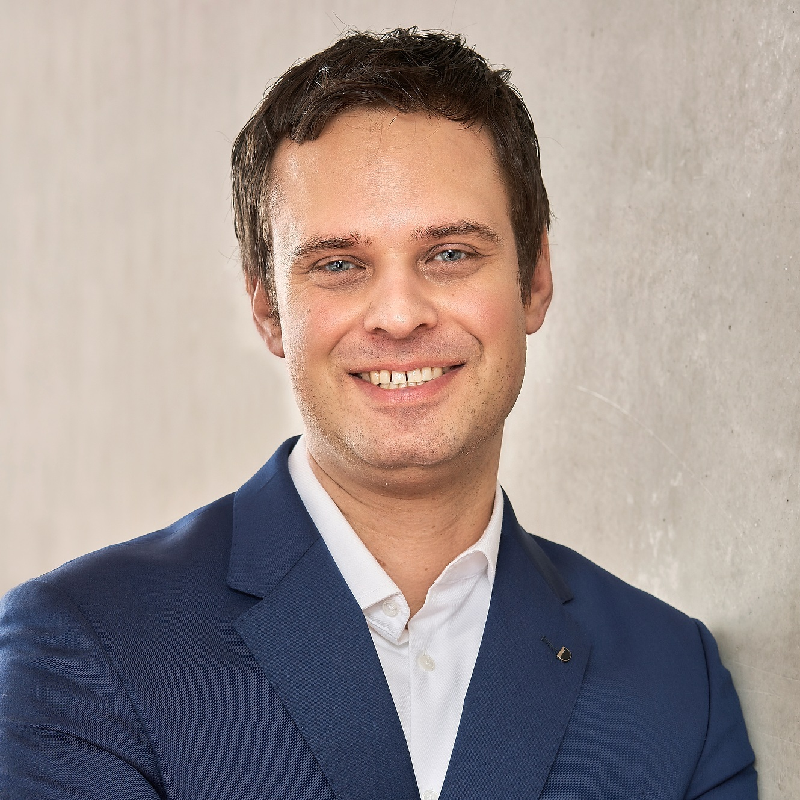

General Chairs

Ivana Dusparic
Trinity College Dublin, Ireland

Danilo Pianini
University of Bologna, Italy
Danilo Pianini
University of Bologna, Italy
Program Chairs

Robert René Maria Birke
University of Turin, Italy

Christian Krupizer
University of Hohenheim, Germany
Christian Krupizer
University of Hohenheim, Germany
ACSOS 2022 Special Event
Biblioteca Malatestiana
- UNESCO World Heritage Site
- First public library in Europe
- Original reading room (Aula del Nuti) from 1447 pristine and visitable, with the original desks
- Founded in 1454
- About 380,000 volumes
- Ancient manuscripts and incunabula
- Smallest book in the world readable with the naked eye
Abbazia di Santa Maria del Monte
- Founded in 1001
- Romanesque architecture
- Located on the top of Monte Giove, overlooking Cesena
- Panoramic view of the city and the surrounding area
- Peaceful and spiritual atmosphere
Rocca Malatestiana
- Medieval fortress
- Built in the 14th century by the Malatesta family
- Offers panoramic views of Cesena and the surrounding countryside
- Houses a museum with historical artifacts and exhibitions
- Beautiful gardens and walking paths
Teatro Alessandro Bonci
- Beautiful 18th-century opera house
- Acoustics considered among the best in the world
- 1000 seats
- Inaugurated in 1846
Piazza del Popolo and the city center
- Central square of Cesena
- Surrounded by historic buildings, cafes, and shops
- Hosts various events and markets throughout the year
- A great place to relax and soak in the local atmosphere
- Features a beautiful fountain (Fontana Masini), symbol of the city
Nearby: Ravenna
- UNESCO World Heritage Site
- Former capital of the Western Roman Empire
- Famous for its stunning Byzantine mosaics
- Historical sites such as the Basilica of San Vitale and the Mausoleum of Galla Placidia
- Europan Capital of Culture 2019
- Dante Alighieri’s tomb
Nearby: Rimini
- Famous seaside resort on the Adriatic coast
- Long sand beaches and vibrant nightlife
- Rich history (it’s the Roman Ariminum), including Roman ruins such as the Arch of Augustus and the Tiberius Bridge
Nearby: Republic of San Marino 🇸🇲
- One of the world’s smallest and oldest republics
- Located on the slopes of Monte Titano
- Known for its medieval architecture, including the Three Towers of San Marino
- Offers stunning views of the surrounding countryside and the Adriatic Sea
Nearby: Imola and Misano International Circuits
- Imola Circuit (Autodromo Enzo e Dino Ferrari): famous for hosting Formula 1
- Misano World Circuit Marco Simoncelli: hosts MotoGP and World Superbike
- We raced there in 2022 with karts, “Misanino” (small Misano) is a smaller-scale replica of the main circuit
Also check out…
- Cesenatico: coastal town with a marina and seafood restaurants
- San Leo: medieval village with a fortress
- Bertinoro: charming hilltop town known for its wine
- Brisighella: picturesque village with a medieval castle and narrow streets
- Foreste Casentinesi National Park: beautiful natural area for hiking and outdoor activities
Conference Location:
University of Bologna, Cesena Campus
- Modern facilities
- Easy access to public transportation